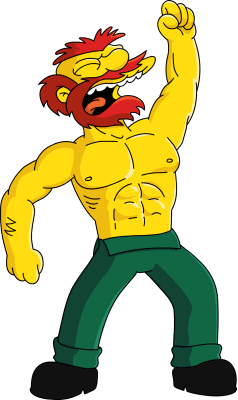
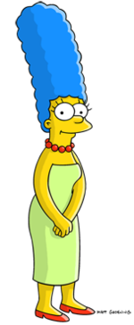

Which Simpson Are You?
Willie MacDougal

William MacDougal, more commonly known as Groundskeeper Willie, is a recurring character on The Simpsons, voiced by Dan Castellaneta. He is head groundskeeper at Springfield Elementary School. Willie is almost feral in nature and is immensely proud of his native Scotland. He is easily identifiable by his flaming red hair and beard, as well as his aggressive temperament and thick though inaccurate Scottish accent.
Homer Simpson

Homer Jay Simpson is a fictional character and the main protagonist of the American animated television series The Simpsons as the patriarch of the eponymous family. He is voiced by Dan Castellaneta and first appeared on television, along with the rest of his family, in The Tracey Ullman Show short "Good Night" on April 19, 1987. Homer was created and designed by cartoonist Matt Groening while he was waiting in the lobby of James L. Brooks' office. Groening had been called to pitch a series of shorts based on his comic strip Life in Hell but instead decided to create a new set of characters. He named the character after his father, Homer Groening. After appearing for three seasons on The Tracey Ullman Show, the Simpson family got their own series on Fox that debuted December 17, 1989.
Bart Simpson

Bartholomew JoJo "Bart" Simpson is a fictional character in the American animated television series The Simpsons and part of the Simpson family. He is voiced by Nancy Cartwright and first appeared on television in The Tracey Ullman Show short "Good Night" on April 19, 1987. Cartoonist Matt Groening created and designed Bart while waiting in the lobby of James L. Brooks' office. Groening had been called to pitch a series of shorts based on his comic strip, Life in Hell, but instead decided to create a new set of characters. While the rest of the characters were named after Groening's family members, Bart's name is an anagram of the word brat. After appearing on The Tracey Ullman Show for three years, the Simpson family received its own series on Fox, which debuted December 17, 1989.
Marge Simpson

Marjorie Jacqueline "Marge" Simpson (née Bouvier) is a fictional character in the American animated sitcom The Simpsons and part of the eponymous family. She is voiced by Julie Kavner and first appeared on television in The Tracey Ullman Show short "Good Night" on April 19, 1987. Marge was created and designed by cartoonist Matt Groening while he was waiting in the lobby of James L. Brooks' office. Groening had been called to pitch a series of shorts based on Life in Hell but instead decided to create a new set of characters. He named the character after his mother Margaret Groening. After appearing on The Tracey Ullman Show for three seasons, the Simpson family received their own series on Fox, which debuted December 17, 1989.